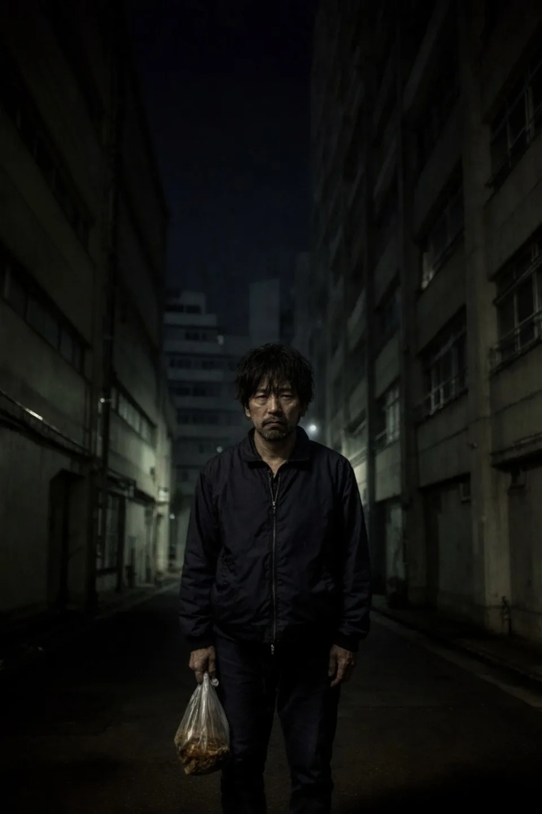
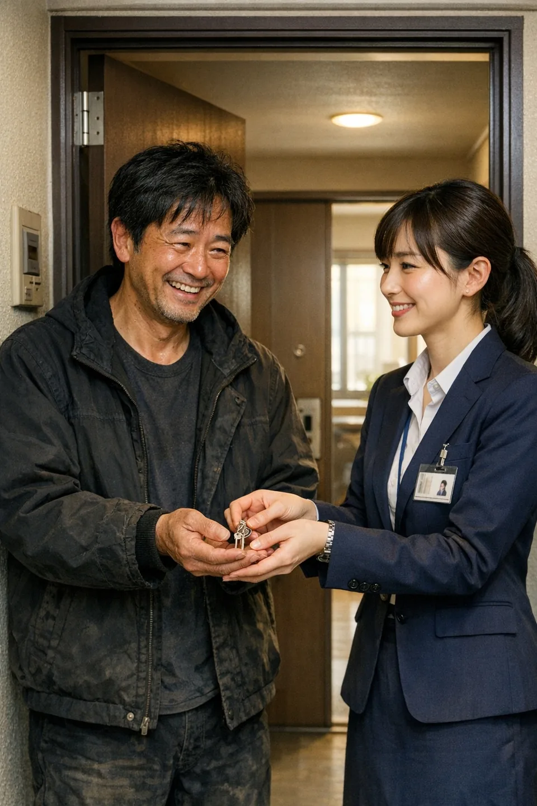
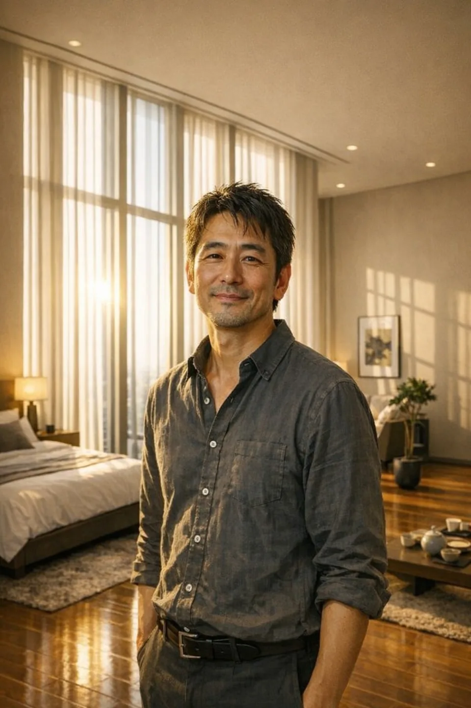

01 / 03
Walang mauuwian.
Wala nang lakas isipin
ang bukas.
Sa ganitong gabi,
hindi mo kailangang mag-isa.

A PLACE TO BEGIN AGAIN
Una, isang ligtas na mauuwian.
Sa unang hakbang na iyon, muling nagsisimula ang buhay.
Nasa Tagalog ang homepage na ito. Nasa Japanese ang mga pahinang may markang “Japanese”.
Pangunahing gawain namin ang pagpapatakbo ng night care house para sa humigit-kumulang 60 taong dumadalo sa Sagamihara DARC.
Tumatanggap kami ng konsultasyon sa pabahay sa Tokyo, Kanagawa at Chiba.
Kung walang mauuwian ang isang tao,
hindi sapat ang sabihing magsimula siyang muli.
Para sa mga nahihirapang makahanap ng tirahan—mga nagpapagaling mula sa adiksiyon, mga nakalaya sa bilangguan, mga ina at anak na nakaranas ng karahasan sa tahanan, LGBTQ+ at mga dayuhang residente—sinusunod ng LUMIRIZE ang Housing First: tirahan muna bilang pundasyon sa pagbangon.
Mahalaga ang matatag na tirahan sa pagbangon. Mula sa ligtas na araw-araw na pamumuhay, sinusuportahan namin ang paggaling at pagbabalik sa komunidad.
Tingnan ang mga serbisyoLigtas na tirahan bilang pundasyon ng bagong simula.
Pagbangon sa sariling bilis ng bawat isa.
Mula sa tulong ng pamahalaan hanggang trabaho at katatagan.
Tulong mula sa pamahalaan JapaneseAming kuwento STORY

01 / 03
Sa ganitong gabi,
hindi mo kailangang mag-isa.

02 / 03
Ang kapanatagang may lugar ka rito.
Doon nagsisimula ang bagong buhay.

03 / 03
Mula sa ligtas na mauuwian,
ipagpatuloy ang buhay sa sarili mong paraan.
Ang mga larawan ay ilustrasyon ng aming paraan ng pagsuporta.
Tirahan at suporta,
ayon sa bawat sitwasyon.
OUR WORK TODAY
Pangunahing gawain namin ang night care house para sa humigit-kumulang 60 dumadalo sa Sagamihara DARC. Inuugnay namin ang pabahay sa pansamantalang tirahan, paghahanda sa trabaho, suporta sa pamumuhay at trabaho ng mga dayuhan, at tulong sa mga bata at pamilya.
Gawain at mga tungkulin JapaneseNagbibigay kami ng ligtas na tirahan para sa mga nagsisikap gumaling. Iginagalang namin ang pribasiya at tumutulong sa pagharap sa pangambang maulit ang paggamit.
Magtanong tungkol ditoTumutulong kaming tugunan ang kawalan ng tirahan pagkakalaya at maglatag ng pundasyon sa pagbabalik sa lipunan—mula sa proseso ng paglipat hanggang pamumuhay at suporta sa trabaho.
Magtanong tungkol ditoPangunahing para sa mga gumagamit ng Sagamihara DARC. Nagbibigay kami ng ligtas na tirahan sa gabi at nakikipagtulungan sa mga programa ng DARC para sa maayos na pang-araw-araw na gawain.
Magtanong tungkol ditoIginagalang namin ang dignidad at pribasiya ng bawat isa. Isinasaalang-alang ang pangamba sa diskriminasyon at pagtatangi habang tumutulong sa paghahanap at paninirahan sa ligtas na tahanan.
Magtanong tungkol ditoNakikinig kami sa mga nangangailangan ng ligtas na tirahan dahil sa karahasan sa tahanan at katulad na sitwasyon. Isinasaalang-alang ang kaligtasan at kagustuhan nila at iniuugnay sila sa pamahalaan, mga espesyalista at shelter. Inaayos nang paisa-isa ang pansamantalang tirahan ayon sa bakante, pagsusuri sa kaligtasan at mga kailangang proseso.
Magtanong tungkol ditoTumutulong kami sa mga suliraning dulot ng pagkakaiba sa wika, sistema at kultura—kabilang ang paglipat, mga tuntunin sa pamumuhay at ugnayan sa serbisyo sa trabaho.
Magtanong tungkol ditoNagiging maayos ang buhay. Lumalawak ang ugnayan. Nakakayanang isipin ang bukas.
Hangad naming maghatid ng pangmatagalang kapanatagan.
Mula sa tirahan hanggang pang-araw-araw na usapin,
sinusuportahan namin ang buhay nang may paggalang sa dignidad.
Sa mga pag-uusap sa ika-3 at ika-6 na buwan, ika-1 at ika-2 taon matapos lumipat, sama-sama naming tinutugunan ang mga problema at alalahanin. Pinangangalagaan ang pribasiya ng konsultasyon.
Kasama ang mga ahensiya sa trabaho, tumutulong kami sa paghahanap ng trabaho, paghahanda sa panayam at dokumento, at pagpapatuloy sa trabaho.
Nakikipagtulungan kami sa mga tanggapan ng kapakanan at serbisyong medikal upang maiugnay ang mga tao sa angkop na programa, kasama ang praktikal na tulong sa aplikasyon.
Tumutulong kaming linangin ang mga gawi, pagba-budget, pangangalaga sa kalusugan at pakikipag-usap para sa sariling pamumuhay.


04 / YOUR FIRST STEP
Limang hakbang sa paglipat.
Magkasama nating aasikasuhin ang proseso.
Makipag-ugnayan sa telepono o email. Magpa-appointment bago bumisita. Maaari ring kumonsulta nang hindi nagpapakilala.
Ipapaliwanag namin ang mga kailangang dokumento ayon sa sitwasyon at tutulong kung mahirap makuha ang mga ito.
Tingnan ang lugar at sama-samang alamin kung angkop ito sa iyong plano at pangangailangan.
Matapos ang pagsusuri, malinaw naming ipaliliwanag ang kasunduan. Maaari ring pag-usapan ang paunang gastos.
Patuloy ang regular na suporta matapos lumipat. Mahalaga sa amin ang ugnayang malalapitan kapag may problema.
05 / QUESTIONS
Dahil mahalaga ang ligtas na tirahan sa muling pagbuo ng buhay. Ito ang pundasyon ng paggaling at bagong simula.
Oo. Pakikinggan namin ang sitwasyon mo at pag-uusapan ang mga pagpipilian at kailangang proseso.
Tumawag muna. Oras sa Japan: Lun–Biy 10:00–17:00; Sabado at pista opisyal 10:00–13:00; sarado tuwing Linggo. Susuriin namin ang sitwasyon at bakante at ipaliliwanag ang mga susunod na hakbang.
Libre ang konsultasyon at pagsama sa mga lakad, kada sesyon o oras. Ipinapaliwanag muna ang pamasahe at iba pang aktuwal na gastos. Ang upa at paunang gastos sa karaniwang pabahay ay ayon sa kontrata sa nagpapaupa. Bayarin at pagsasaayos ng night care houseJapanese ay ipinaliliwanag sa aming mga tuntunin sa pagpapatakbo.
Tungkol sa tirahan, pamumuhay at kinabukasan.
Ikuwento muna sa amin ang iyong sitwasyon.
Libre ang unang konsultasyon.
Oras ng telepono (oras sa Japan): Lun–Biy 10:00–17:00; Sabado at pista opisyal 10:00–13:00. Sarado tuwing Linggo.
info@lumirize.coSTART A CONVERSATION
Gamitin ang form para sa tanong tungkol sa tirahan, tulong ng pamahalaan, trabaho o pamumuhay.
Buksan ang gabay sa konsultasyon Basahin ang mga tanong Japanese